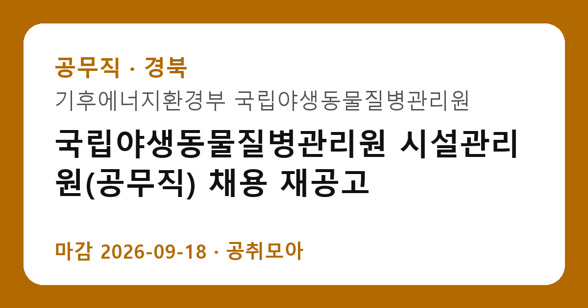

[공무직] 국립야생동물질병관리원 시설관리원(공무직) 채용 재공고
기후에너지환경부 국립야생동물질병관리원 · 경북 · 마감 2026-09-18 (D-1) · 출처 나라일터

한눈에 보는 모집 조건
| 기관 | 기후에너지환경부 국립야생동물질병관리원 |
|---|---|
| 공고명 | 국립야생동물질병관리원 시설관리원(공무직) 채용 재공고 |
| 고용형태 | 공무직 |
| 근무지 | 경북 |
| 게시일 | 2026-09-07 |
| 마감일 | 2026-09-18 (D-1) |
지원자격, 이렇게 읽으세요
- 시설관리 실무 가능자
- 교대근무 가능자 우대
- 서류→면접
공고문의 응시자격은 짧게 쓰여 있지만 실제로는 세 가지를 봅니다. 첫째 결격사유 해당 여부, 둘째 자격·경력의 직무 연관성, 셋째 근무 시작 가능일입니다. 셋 중 하나라도 애매하면 원문 공고문의 세부 조항을 먼저 확인하고 지원서를 쓰세요. 특히 기후에너지환경부 국립야생동물질병관리원 공고는 공무직 전형이라 서류에서 직무 연관 키워드(공무직)를 명시하는 게 유리합니다.
이 공고의 포인트
'시설관리' 조건을 눈여겨보세요. 이번 기후에너지환경부 국립야생동물질병관리원 모집에서 '시설관리 실무 가능자' 항목이 사실상 1차 필터 역할을 합니다. 본인이 맞는다면 지원 우선순위를 맨 위로 올리고, 아니라면 비슷한 조건의 관련 공고 3개를 함께 검토해 차선을 마련해 두세요.
전형은 어떻게 진행되나
전형은 서류심사로 시작해 면접심사로 끝나는 2단계가 기본입니다. 서류 단계의 평가자는 지원서와 자기소개서에서 직무 적합성을 찾고, 면접 단계에서는 실무 이해도와 오래 근무할 사람인지를 확인합니다. 마감일(2026-09-18) 당일 접수는 시스템 지연이 잦으니 하루 먼저 끝내 두는 게 안전합니다. 접수번호와 수험표 출력까지 마쳐야 접수가 완료됩니다.
이런 분께 추천해요
- 경북 근무가 가능한 분 — 통근·거주 조건이 맞는지가 1순위입니다
- 공무직 전형을 찾는 분 — 공무직 분야 관심자라면 우선 검토 대상입니다
- 마감(2026-09-18) 안에 서류를 낼 수 있는 분 — D-1이니 오늘 지원서 초안부터 잡으세요
지원 전 체크리스트
- 기후에너지환경부 국립야생동물질병관리원 원문 공고문 저장했는가(공고 변경 대비)
- 지원서 초안과 증빙 파일이 준비됐는가
- 접수 마감일 2026-09-18(D-1)을 달력에 표시했는가
- 경북 출퇴근·거주 조건이 맞는가
모집 일정과 제출 타이밍
이번 공고의 접수 기간은 2026-09-07부터 2026-09-18까지입니다. 남은 기간은 약 1일입니다. 서류 준비에 1일을 쓰고 마지막 하루는 접수·확인용으로 남겨두세요. 원서 접수는 시작일보다 마감일에 몰리는 구조라, 서버가 느려지는 마감 당일은 피하는 게 상책입니다. 권장 스케줄을 짜보면 첫째 날 공고문 정독과 지원자격 체크, 중간 날 자기소개서 작성과 증빙 준비, 마감 전날 접수 시스템 사전 입력입니다. 특히 기후에너지환경부 국립야생동물질병관리원 채용은 마감 이후 추가 접수를 받지 않으니, 접수번호와 확인증 출력까지 마쳐야 비로소 지원 완료입니다.
직무 이해하기: 공무직
공무직 실무는 시설·환경·조리·운전 등 현장 업무가 중심입니다. 관련 자격증(기능사 이상)이나 실무 경력이 있으면 서류에서 강하게 어필됩니다. 교대·주말 근무와 실제 수령액(수당 포함)을 원문 보수표에서 대조하고 지원하는 것이 실패를 줄이는 방법입니다. 기후에너지환경부 국립야생동물질병관리원의 이번 채용(공무직)도 같은 잣대로 보면 됩니다. 공고 제목에 적힌 분야명과 직무기술서의 필요역량을 나란히 놓고, 본인 경험에서 겹치는 키워드를 세 개 이상 뽑아보세요. 그 세 개가 자기소개서와 면접 답변의 뼈대가 됩니다.
자기소개서 작성 팁
좋은 자기소개서의 공식은 단순합니다. 지원 분야(공무직)와의 인연 한 줄, 숫자가 박힌 경험 두 개, 입사 후 포부 한 단락입니다. 반대로 기후에너지환경부 국립야생동물질병관리원 서류 탈락 사유 상위권은 늘 비슷합니다. 직무와 무관한 자서전식 전개, 증빙 자료와 어긋나는 주장, 마감일(2026-09-18) 실수입니다. 공무직 전형 지원자라면 채용 즉시 업무가 가능하다는 점을 글로 못 박아 두세요. 실무 투입 속도가 가산점처럼 작용합니다.
면접 준비 포인트
면접 준비의 핵심은 자소서 방어와 기관 이해입니다. 적은 경험을 조리 있게 설명할 수 있어야 하고, 기후에너지환경부 국립야생동물질병관리원이 무슨 일을 하는 기관인지 한 가지 사업이라도 말할 수 있어야 합니다. 지원 분야(공무직) 지식과 연결 지으면 점수가 오릅니다. 끝인사에서는 근무지(경북)·공무직 조건을 수용한다는 의사를 분명히 하세요. 일찍 도착해 여유를 갖고, 두괄식으로 답하는 지원자가 좋은 인상을 남깁니다.
급여·근무조건 읽는 법
공고문의 보수 표기는 호봉·수당·상여를 합친 기준이 아니라 기본급 기준인 경우가 많습니다. 실제 수령액은 원문의 보수·복무 조항과 동일 기관 재직자 채용 후기를 함께 봐야 가늠이 됩니다. 공무직 공고라면 계약 기간, 연장·전환 조건, 4대 보험과 퇴직금 적용 여부를 원문에서 반드시 확인하세요. 근무지(경북)가 도서·산간이거나 교대 근무가 포함된 경우에는 주거 지원·통근버스 조항도 체크리스트에 넣으세요.
자주 묻는 질문
- 경쟁률은 어느 정도로 예상되나요?
인기 기관·경북 근무 공고는 서류 경쟁률이 10대 1을 넘는 일이 흔합니다. 다만 '시설관리' 같은 조건부 전형은 실질 경쟁률이 낮아지는 경우가 많으니, 본인 조건에 맞는 공고를 고르는 것 자체가 전략입니다. - 합격자 발표는 어디서 확인하나요?
기후에너지환경부 국립야생동물질병관리원 홈페이지 채용 게시판과 지원 시 등록한 문자·이메일로 안내됩니다. 발표일에는 접속이 폭주하니 접수번호를 미리 메모해 두세요. 예비합격자 운영 여부도 원문에서 함께 확인하는 것이 좋습니다. - 불합격하면 다음 기회는 언제인가요?
공공기관은 상·하반기 정기 채용과 수시·추가 모집이 반복됩니다. 이번 마감일(2026-09-18)을 놓쳐도 같은 기관의 다음 회차가 열리니, 공취모아의 공무직 탭을 구독하듯 수시로 확인하세요.
함께 보면 좋은 공고
[교육청] 2026학년도 인천중산중학교 기간제 교원 채용 공고(영양) — 마감 2026-09-09[교육청] 2026학년도 충훈고 시간강사 채용(체육) — 마감 2026-09-10[공기업] 2026년도 예금보험공사 신입직원 채용 (35명) — 마감 2026-09-11출처: 나라일터 공개정보를 바탕으로 공취모아가 정리한 안내글입니다. 모집 조건·일정은 변경될 수 있으니 지원 전 반드시 원문 공고문을 확인하세요. 본 글은 정보 제공용이며 합격을 보장하지 않습니다.